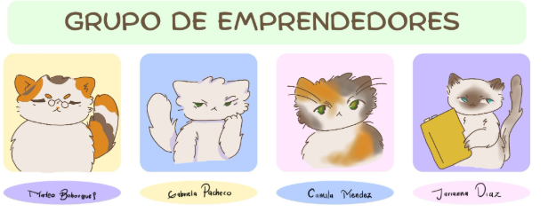

Nuestros gatos en adopción

Luna
2 años · Rescatada · Muy cariñosa
Michi
1 año · Juguetón · Busca hogar
Nube
3 años · Tranquila · Adorable
Un espacio acogedor en Bogotá D.C. donde la gastronomía de calidad, el bienestar emocional y la protección animal se encuentran.
Conocer a nuestros gatos Hacer una reservaCrear un espacio innovador y acogedor en Bogotá D.C. donde se integren la experiencia gastronómica de alta calidad, el bienestar emocional y la protección animal. Brindamos un ambiente tranquilo para relajarse, compartir y desconectarse del estrés, mientras contribuimos activamente al rescate, cuidado y adopción responsable de gatos en situación de calle, fomentando el respeto, la empatía y el amor hacia los animales.
Consolidarnos como un modelo líder en Bogotá D.C. y a nivel nacional, reconocido por su impacto social, su propuesta innovadora y su compromiso con el bienestar animal y humano. Aspiramos a expandir nuestro concepto a diferentes ciudades, creando una red de espacios que promuevan la adopción responsable, la educación sobre el cuidado animal y la generación de experiencias únicas que transforman la vida de las personas y de los gatos.
2 años · Rescatada · Muy cariñosa
1 año · Juguetón · Busca hogar
3 años · Tranquila · Adorable


Agenda tu hora en nuestro café y asegura tu lugar para convivir con los gatos.
Relájate con una bebida de calidad mientras compartes con nuestros gatos rescatados.
Si te enamoras de algún gato, inicia el proceso de adopción responsable y dale un hogar.
Bogotá D.C., Colombia. Un espacio donde cada café salva una vida.